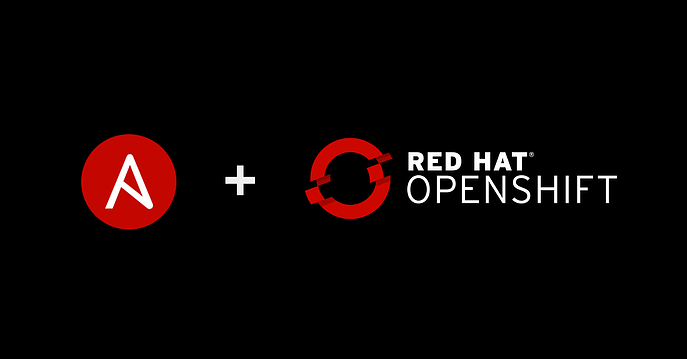

Modernización de App
Las grandes empresas de Software de hoy en día, requieren cierta agilidad con los despliegues. Términos como Integración Continua y Distribución Continua (CI/CD) refieren a esto: Hoy en día se requiere mejorar los tiempos de despliegue. Para lograr esto, se utilizan un conjunto de prácticas que se titulan bajo el nombre de DevOps. En esta demo, lo que vamos a hacer es realizar el build de una página web con las validaciones requeridas y que se automatice su despliegue en Openshift.